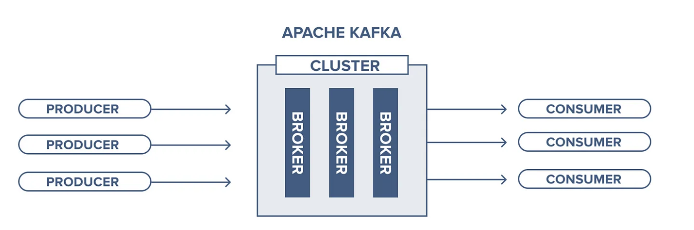
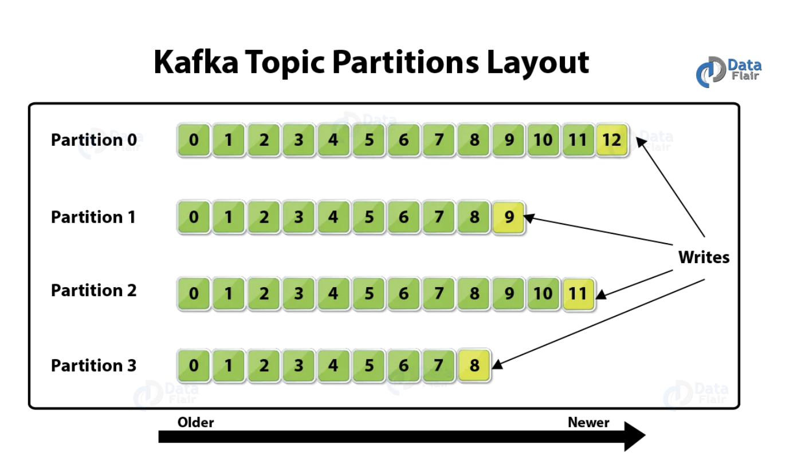
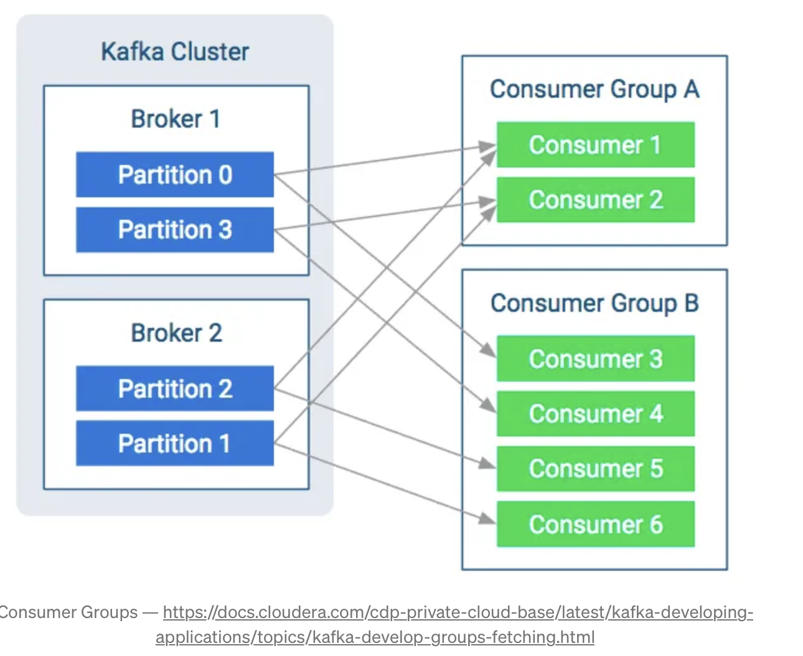

Lecture 4 - Streaming architecture
A streaming architecture is a defined set of technologies that work together to handle stream processing, which is the practice of taking action on a series of data at the time the data is created. In many modern deployments, Apache Kafka acts as the store for the streaming data, and then multiple stream processors can act on the data stored in Kafka to produce multiple outputs. Some streaming architectures include workflows for both stream processing and batch processing, which either entail other technologies to handle large-scale batch processing or use Kafka as the central store as specified in the Kappa Architecture.
An excellent real-time data processing architecture needs to be fault-tolerant and scalable; it needs to support batch and incremental updates and be extensible.
In the beginning, we explore two essential data processing architectures, Lambda and Kappa, that serve as the backbone of various enterprise applications.
Lambda architecture
Lambda architecture comprises Batch Layer, Speed Layer (the Stream layer), and Serving Layer.
The batch layer operates on the complete data and thus allows the system to produce the most accurate results. However, the results come at the cost of high latency due to high computation time. The batch layer stores the raw data as it arrives and computes the batch views for consumption. Naturally, batch processes will occur at some interval and will be long-lived. The scope of data is anywhere from hours to years.
The speed layer generates results in a low-latency, near real-time fashion. The speed layer computes the real-time views to complement the batch views. The speed layer receives the arriving data and updates the batch layer results. The computation cost is significantly reduced thanks to the incremental algorithms implemented at the speed layer. The batch views may be processed with more complex or expensive rules and may have better data quality and less skew, while the real-time views give you up-to-the-moment access to the latest possible data.
Finally, the serving layer enables various queries of the results sent from the batch and speed layers. The outputs from the batch layer in the form of batch views and the speed layer in the form of near-real-time opinions are forwarded to the serving layer, which uses this data to cater to the pending queries on an ad-hoc basis.

Implementation Example:

Good
- Good balance of speed, reliability, and scalability.
- Access to both real-time and offline results in covering many data analysis scenarios very well.
- Accessing a complete data set in a batch window may yield specific optimizations that make Lambda better performing and even simpler to implement.
Bad
- Internal processing logic is the same (batch and real-time layers) - many duplicate modules and coding.
- A data set modelled with Lambda architecture is difficult to migrate and reorganize.
Kappa architecture
The Kappa Architecture is a software architecture used for processing streaming data. The central premise behind the Kappa Architecture is that you can perform real-time and batch processing, especially for analytics, with a single technology stack. It is based on a streaming architecture in which an incoming data series is first stored in a messaging engine like Apache Kafka. From there, a stream processing engine will read the data, transform it into an analyzable format, and then store it in an analytics database for end users to query.
The Kappa Architecture supports (near) real-time analytics when the data is read and transformed immediately after it is inserted into the messaging engine. This makes recent data quickly available for end-user queries. It also supports historical analytics by reading the stored streaming data from the messaging engine later in a batch manner to create additional analyzable outputs for more types of analysis.
The Kappa Architecture is a simpler alternative to the Lambda Architecture as it uses the same technology stack to handle real-time stream and historical batch processing. Both architectures entail the storage of historical data to enable large-scale analytics. Both architectures are also helpful in addressing “human fault tolerance,” in which problems with the processing code (bugs or known limitations) can be overcome by updating the code and rerunning it on historical data. The main difference with the Kappa Architecture is that all data is treated as a stream, so the stream processing engine acts as the sole data transformation engine.

Implementation Example:

Good
- Applications can read and write directly to Kafka as developed. For existing event sources, listeners are used to streaming reports now from database logs eliminating the need for batch processing during ingress, resulting in fewer resources.
- Queries only need to look at a single serving location instead of going against batch and speed views.
Bad
- not easy to implement, especially for the data replay.
How do the Lambda and Kappa compare?
Both architectures handle real-time and historical analytics in a single environment. However, one significant benefit of the Kappa Architecture over the Lambda Architecture is that it enables you to build your streaming and batch processing system on a single technology. This means you can build a stream processing application to handle real-time data, and if you need to modify your output, you update your code and then rerun it over the data in the messaging engine in a batch manner. As suggested by the Lambda Architecture, there is no separate technology to handle batch processing.
With a sufficiently fast-stream processing engine, you may not need a different technology optimized for batch processing. You read the stored streaming data in parallel (assuming the data in Kafka is appropriately split into separate channels, or “partitions”) and transform the data as if it were from a streaming source. For some environments, you can create the analyzable output on demand. When a new query is submitted from an end user, the data can be transformed ad hoc to answer that query optimally. Again, this requires a high-speed stream processing engine to enable low latency.
While the Lambda Architecture does not specify the technologies that must be used, the batch processing component is often done on a large-scale data platform like Apache Hadoop. The Hadoop Distributed File System (HDFS) can economically store the raw data that can be transformed via Hadoop tools into an analyzable format. While Hadoop is used for the batch-processing component of the system, a separate engine designed for stream processing is used for the real-time analytics component. However, one advantage of the Lambda Architecture is that much larger data sets (in the petabyte range) can be stored and processed more efficiently in Hadoop for large-scale historical analysis.
Publish/Subscribe
The Publish/Subscribe messaging system is critical to data-driven apps. Pub/Sub messaging is a pattern characterized by the sender (publisher) of a piece of data (message) not explicitly directing it to a receiver. Pub/sub-systems often have a broker, a central point where messages are.
Apache Kafka
On Kafka website, you’ll find the definition of it right on the first page:
A distributed streaming platform
What is an “Distributed streaming platform”?
First, I want to remind you what a stream is. Streams are just unlimited data, data that never end. It just keeps arriving, and you can process it in real time.
And distributed? Distributed means that Kafka works in a cluster, and each node in the group is called Broker. Those brokers are just servers executing a copy of apache Kafka.
So, Kafka is a set of machines working together to be able to handle and process real-time unlimited data.
His distributed architecture is one of the reasons that made Kafka so famous. The Brokers make it resilient, reliable, scalable, and fault-tolerant. That’s why Kafka is so performer and secure. But why is there this misconception that Kafka is another messaging system?
To respond to that answer, we must first explain how messaging works.
Messaging system
Messaging, very briefly, it’s just the act of sending a message from one place to another. It has three principal actors:
- Producer: Who produces and sends the messages to one or more queues;
- Queue: A buffer data structure that receives (from the producers) and delivers messages (to the consumers) in a FIFO (First-In First-Out) way. When a notice is given, it’s removed forever from the queue; there’s no chance of getting it back;
- Consumer: Who is subscribed to one or more queues and receives their messages when published.
And that is it; this is how the messaging works (very briefly, there’s a lot more). As you can see, there’s nothing about streams, real-time, or clusters (depending on your chosen tool, you can use a set too, but it’s not native, like Kafka).
Kafka architecture
A lot of information You can find in this link.
Now that we know how messaging works let’s dive into the Kafka world. In Kafka, we also have the Producers and Consumers; they work in a very similar way that they work in the messaging producing and consuming messages.

As you can see, it is very similar to what we’ve discussed about messaging, but here we don’t have the Queue concept. Instead, we have the idea of Topics.
The Topic is a particular type of data stream; it’s very similar to a Queue, it receives and delivers messages as well, but there are some concepts that we need to understand about topics:
- A topic is divided into
partitions; each case can have one or more partitions, and we need to specify that number when creating the issue. You can imagine the topic as a folder in the operating system and each folder inside her as a partition. - Each message will be stored in the broker disk and receive an offset (unique identifier). This offset is unique at the partition level; each partition has its owns offsets. That is one more reason that makes Kafka so special, it stores the messages in the disk (like a database, and in fact, Kafka is a database too) to recover them later if necessary. Different from a messaging system, the message is deleted after being consumed;
- The consumer use the offset to read the messages, from the oldest to the newest. In case of consumer failure, it will start reading from the final place when it recovers.

Brokers
As said before, Kafka works in a distributed way. A Kafka cluster may contain many brokers as needed.

Each broker in a cluster is identified by an ID and contains at least one topic partition. To configure the number of partitions in each broker, we need to configure something called Replication Factor when creating a topic. Let’s say we have three brokers in our cluster, a topic with three partitions and a Replication Factor of three; in that case, each broker will be responsible for one section of the issue.
As you can see in the above image, \(Topic_1\) has three partitions; each broker is responsible for a section of the topic, so the Replication Factor of the \(Topic_1\) is three. The number of partitions must match the number of brokers; in this way, each broker will be responsible for a single section of the topic.
Producers
Just like in the messaging world, Producers in Kafka are the ones who produce and send the messages to the topics. As said before, the messages are sent in a round-robin way. Ex: Message 01 goes to partition 0 of Topic 1, and message 02 to partition 1 of the same topic. It means that we can’t guarantee that messages produced by the same producer will always be delivered to the same topic. We need to specify a key when sending the message, Kafka will generate a hash based on that key and will know what partition to deliver that message. That hash takes into consideration the number of the partitions of the topic, that’s why that number cannot be changed when the topic is already created.
Consumers and Consumers Groups
Consumers are applications subscribed to one or more topics that will read messages from there. They can read from one or more partitions. When a consumer reads from just one partition, we can ensure the order of the reading, but when a single consumer reads from two or more partitions, it will read in parallel, so, there’s no guarantee of the reading order. A message that came later can be read before another that came earlier, for example. That’s why we need to be careful when choosing the number of partitions and when producing the messages.
Another important concept of Kafka is the Consumer Groups. It’s really important when we need to scale the messages reading. It becomes very costly when a single consumer needs to read from many partitions, so, we need o load-balancing this charge between our consumers, this is when the consumer groups enter.
The data from a single topic will be load-balancing between the consumers, with that, we can guarantee that our consumers will be able to handle and process the data. The ideal is to have the same number of consumers in a group that we have as partitions in a topic, in this way, every consumer read from only one. When adding consumers to a group, you need to be careful, if the number of consumers is greater than the number of partitions, some consumers will not read from any topic and will stay idle.
